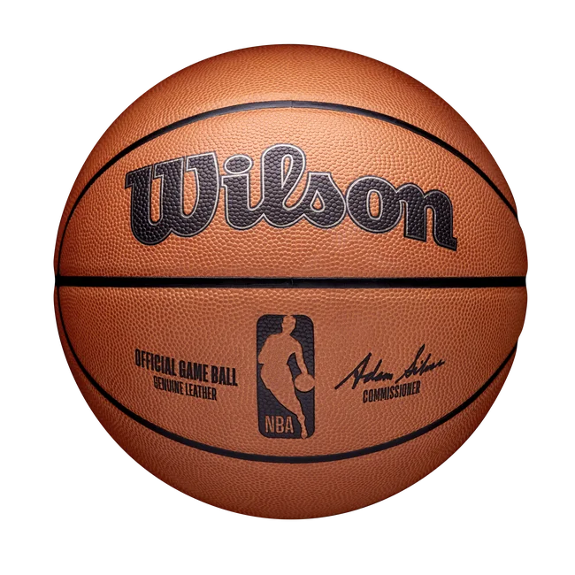
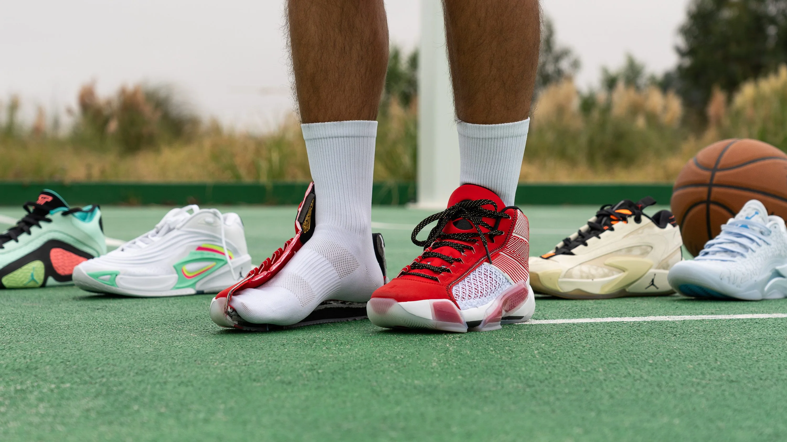
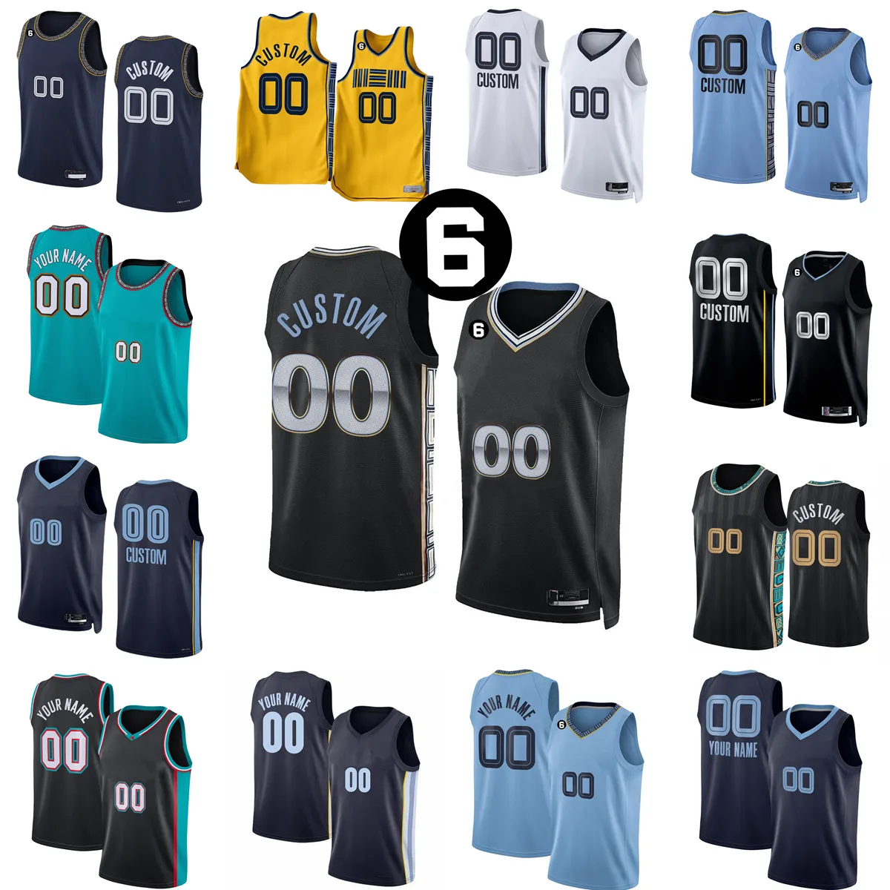
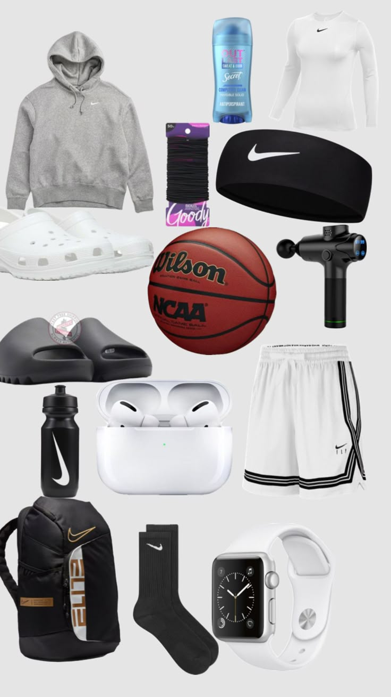

Essential Basketball Equipment
Basketball is a fast-paced sport that requires specific equipment to ensure safety, performance, and comfort. Here are the essential pieces of basketball equipment every player needs:
Basketball
The basketball itself is the core piece of equipment. Official balls are usually made of leather or composite material and weigh about 22 ounces, with a circumference of 29.5 inches. It's designed for optimal grip and durability.
Basketball Shoes
Basketball shoes provide the necessary support, traction, and comfort. The soles are designed to prevent slipping, and the high-top shoes offer ankle support, reducing injury risk during fast movements.
Basketball Uniform
Basketball uniforms usually consist of jerseys and shorts made from moisture-wicking materials. These uniforms ensure comfort during the game and often represent the team’s colors and logo.
Basketball Accessories
Accessories such as knee pads, elbow pads, mouthguards, and wristbands help protect players from injuries. Basketball bags are also essential for carrying all your gear to and from the court.
